Nov - Dec 2018 (3 weeks)
DSGN 1 - The Design of Everything Things
UI / UX Designer
User Interviews, UX Research, Storyboarding, Prototyping, Wireframes, Competitive Analysis
Marvel
The UC San Diego Mobile App is a location-based mobile application promoted to students on the UC San Diego campus and published to the public via the Apple App Store and Google Play as of March 2018. It promotes 8 specific features on these stores such as shuttle arrival times, dining area, parking spot availability, and current events.
Although it is available on both iOS 8.0+ and Android 4.1+, we are redesigning the Dining Section specifically for the iOS system to be targeted for the use of UCSD students and faculty.
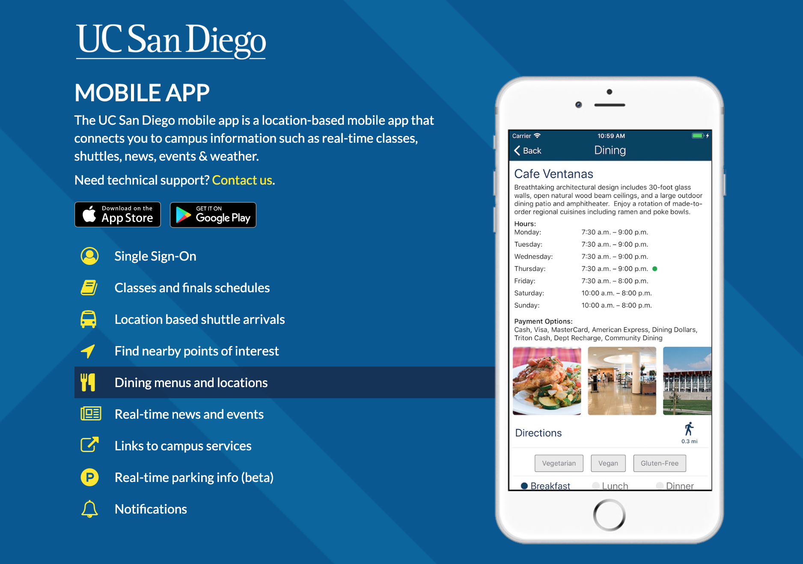In order to understand a user’s interaction and experience with the dining section of the UCSD app, we conducted interviews and asked interviewees to perform specific tasks using the app. We asked the interviewees questions before, during, and after performing the tasks to understand their familiarity of the application.
The interviewees of this study are derived from a random sample of students from UCSD and adults from La Jolla. 13/18 of the participants were students (72.2%), and 5/18 of the participants were randomly selected La Jolla residents (27.7%).
See our spreadsheet for our interview responses.
The users helped us to identify the core problems of the UCSD App’s Dining Sections during their interviews and tasks. Their favored method of choice of letting us know these was by verbally complaining about the app itself. We went in further through tasks and a few more “why’s” to pinpoint their exact grievances felt when navigating the the Dining Section.
“There was no way to see the distinctions between dining halls and PC restaurants at a quick glance, so I felt frustrated that there wasn't a simple search tool” (User 15).
Users most notably voiced their frustrations over the lack of a search bar, finding it tedious to scroll endlessly until they came across their desired restaurant or detail. With the lack of filtering, they often found themselves scrolling past the specific restaurants we had asked them to find during the tasks. We witnessed users like User 15, who scrolled through the Jamba Juice section a total of 5 separate times before finding it during Task 5, voice their frustration at an apparent lack of ordering.
“So disorganized. Doesn't make me want to use this app because it's hard to use. I hate that I have to keep scrolling, there's no search bar, nothing to filter what I'm looking for” (User 4). “It is pretty useless. There is no filtering, it needs search bar. . . disorganized!” (User 5).
We heard this word come up again and again: disorganized. With the Dining Section being ranked in no apparent order, information felt scattered to the users. There was no integration of order either alphabetically, categorically, or location-based distances. This created a loss of dependability within the user’s perceptions of the app; this was not a resourceful tool they would routinely use when expecting fast solutions to their needs. The lack of categorization was visually implicit; there was no apparent difference between a dining hall, market, restaurant, cafe or anything else.
“. . .it's a long list and there is no order, should have separate dining halls and restaurants” (User 18)
There is no visible comparison between establishments on the Dining Section start menu. This was exemplified in Task 8, where users had difficulty determining the difference between cheap and expensive places to get meals on-campus. Users were also unsure of what type of food was served at each of these places. When prompted to tell us the most expensive and the cheapest place on campus, User 15 went as far as to admit defeat from the app saying, “I have no idea how to do this. They don’t even have an expenses indicator, I give up.”
This kind of learned helplessness was almost inevitable from a design point of view. User 16 voiced this exact problem by saying, “How do I do that? I would have to go through every single one.. There’s no way to quickly tell..unless I go through every single menu item and look at prices.”
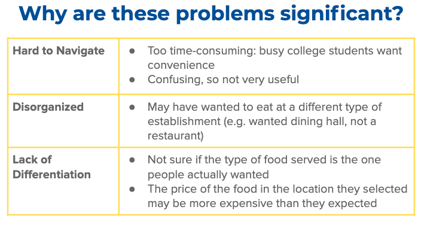Although the UC San Diego mobile app does afford users the ability to search through the application to answer all their questions, it is not the most realistic or efficient way of providing information preoccupied students or faculty. The app had become more of an inconvenience than a daily tool to be utilized.
Overall, the original UC San Diego Mobile App: Dining Section was not a user-friendly interface. These problems originated with the interface of the app itself, with large bodies of text and a minimal use of visual aids or sectioning to break up the monotony of presentation. This was exemplified in its disorganization and lack of categorization; users felt constantly overwhelmed by information and dissatisfied with the use of time navigating the app for certain details took. The app’s end product: a confusing process and design needed to be streamlined into a smoother look and general experience.
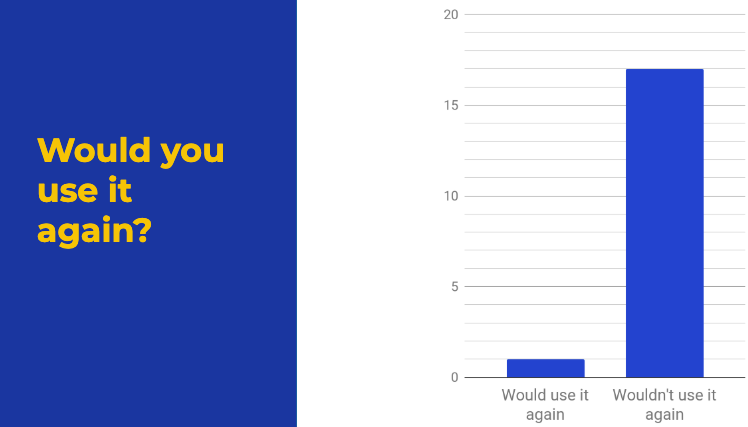Following the double diamond design, we analyzed the problem and redesigned the interface. For the solution, we brainstormed our ideas and sketched as many prototypes we could come up with. Since we all had different ideas, each of us drew the prototype we had in mind, and then combined our idea into the best version. The sketches helped us come to an agreement on the redesign.
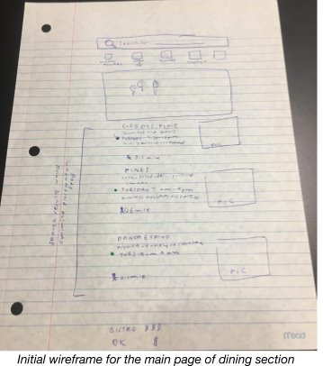 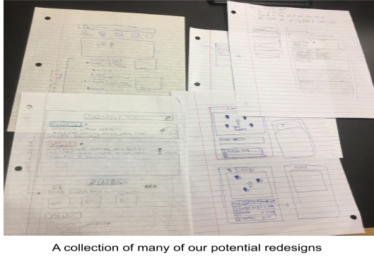The picture above includes more wireframes we sketched. There is a map to indicate where the closest dining halls and restaurants are. Five blocks are on top to separate “all”, “dining hall”, “restaurant”, “cafe”, and “other” categories. Clicking on any of those sections would list down the specific food places which correspond to the clicked section. Because there would be a list of restaurants for each category, there was no need to have a list of restaurants under the map in the main page. On top of those blocks there is also the search bar, used to search for restaurants. We also thought about adding pictures on the list of dining hall / restaurants, rather than just having the name of the place. We thought that having several images with keywords of food offered by the food place would be more helpful and visually appealing.
We created our final redesign using Marvel, a collaborative design platform that allows designers to create digital mockups of mobile applications. Using Marvel, we were also able to connect the workflow of the app and make it an interactive prototype.
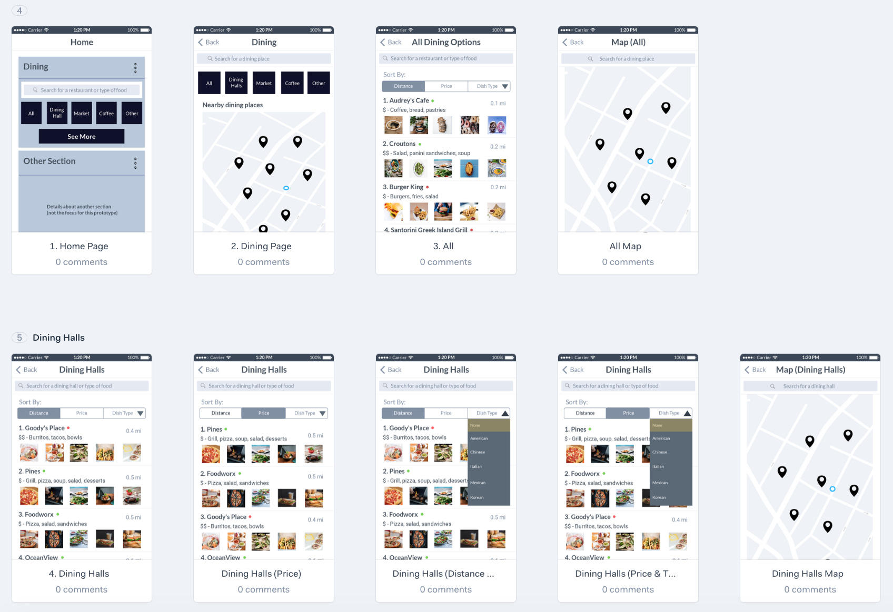 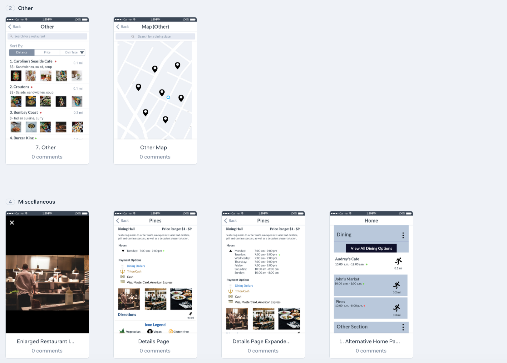 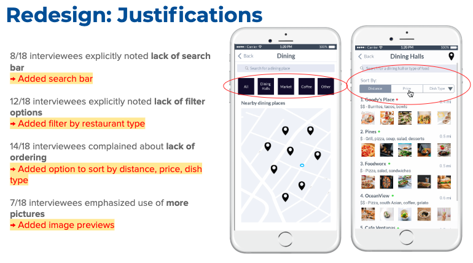 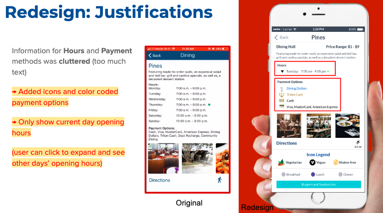 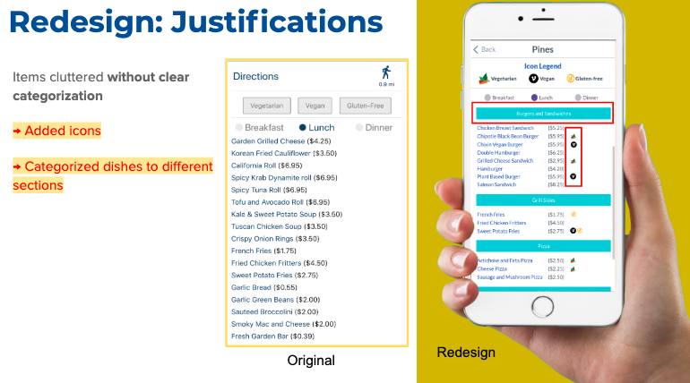 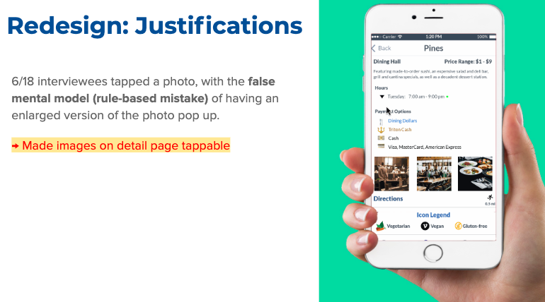This table shows a comparison of our redesign with other existing designs (1: bad ; 5: good). We chose these factors to compare because, according to our user feedback, these were the factors that were necessary in our redesign.
The current UCSD dining section is not very informative. It just has a lot of textual information. It has a complicated layout with no organization or visual aesthetics, making it really hard to use.
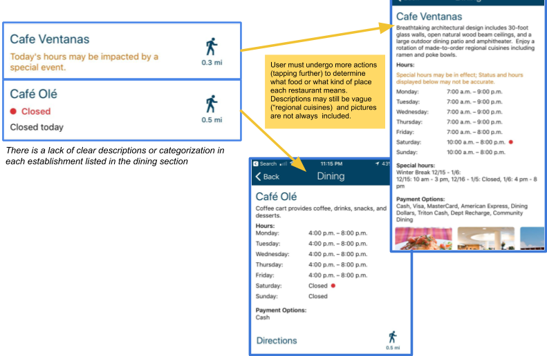The HDH website is very informative. It provides information about every dining hall, with specific information on vegan, vegetarian, or gluten-free food. However, due to its layout, it feels like a lot of information is put together in one place, and thus it is somewhat disorganized. On top of that there are no images of the food either. It is not hard to navigate through the website, but going through the website every single time they want food is not the best way for busy students and faculty to find out what kind of food is being served at dining halls and restaurants.
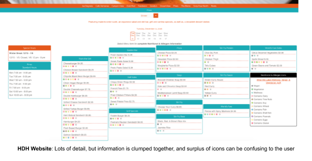The Tapingo application, like the UCSD dining section, does not provided any specific order or ability to filter the the list of establishments; however it is still ranked higher in than the UCSD dining app or the HDH website because it provided the user to search for the establishment that they were looking for. In addition, this application allows for users to see a complete list of all the food that is offered and its prices so that they could order.
Yelp has a great layout, visual aesthetics, and is very informative. However the users that we target are UCSD students who need to use dining dollars or find places to eat on campus. Yelp goes beyond that and provides with more than necessary information, thus confusing the user and not providing the need.
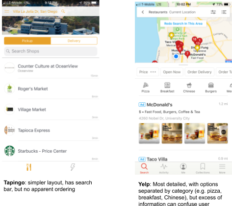Our redesign focuses on all those factors. We added images that can expand (so that the foods are more appealing), filter/sorting tools so that it is easier to find the food the user wants, and have a good balance between images and textual information. Overall all these factors make it much easier to navigate through the new UCSD app than the current one.
After working on this project, I've learned that the balance between information and visual aids is extremely important to build an effective interface. For our application, there was a lot of information offered, so having organization and filter options are very useful for efficient navigation. It is also imperative that designers test their prototypes before publishing it as their final design, because user testing provides valuable feedback and shows any points where they are confused with the design.